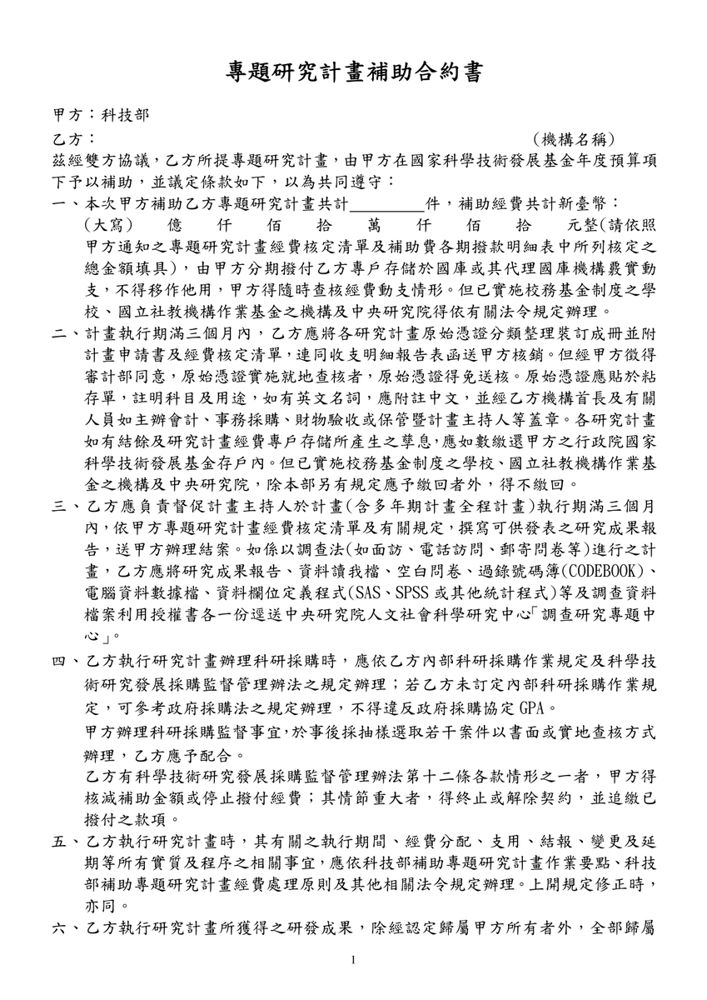
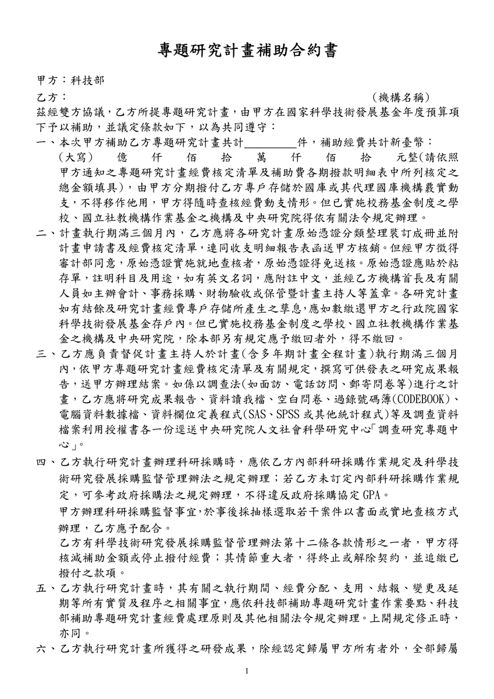

From the list: 7/8前｜計劃書撰寫 ✔ 請擬定合作企劃中的App系統要求，送出計劃書前與Yahoo!方討論後再送法務 Wei-An 謝. added this on Jun 18, 2019 Completed Jun 19, 2019 by Jones Y. Assigned to Jones Y. Comments & Events 依寧 completed this to-do. Jun 19, 2019 at 2:49 AM 依寧 re-opened this to-do. Jun 19, 2019 at 2:49 AM Jones Yu, 計畫共同主持人 暫擬如下，請大家看看是否ok?合作方式： Yahoo以企業社會責任方式加入計畫，以台北等公車app為基礎，共同發展視障者專屬版本，免費給視障族群使用。 由本計劃hire一位工程師（可由yahoo 和我們一同interview）駐點開發此app。（若同時開發iOS &Android版，人力需求再做研議） 基於專案開放公開精神，我們將定期公開開發過程，訊息揭露會避開營業機密，僅以視障者使用流程為主。 權利義務： 本計劃完成之app著作權為yahoo及科技部共有，yahoo協助上架並保證維運五年。 本計劃所完成之視障者相關操作介面與功能將永久免費開放給視障者使用，且不安插廣告避免破壞操作流暢性。 本計劃於各宣傳管道揭露Yahoo為合作單位。 本計劃定期分享使用者研究成果給yahoo. 未來本計劃基於雙方合作之成果所發表之論文將列yahoo為coauthor. 其他公家或私人單位可依本專案發展之使用流程開發自己的視障者搭車app。 Jun 19, 2019 at 4:42 PM Notified 1 person Jones Yu completed this to-do. Jun 19, 2019 at 4:46 PM Hsien-Hui Tang 唐玄輝, 總監 我不確定這個要不要列入，由本計劃hire一位工程師（可由yahoo 和我們一同interview）駐點開發此app。（若同時開發iOS &Android版，人力需求再做研議 Jun 20, 2019 at 12:22 AM Notified 2 people A-Bao, 計畫伴隨者 hire一位工程師這件事是否須要先寫入計畫書，我和依寧討論一下，因為理論上他就是老師們聘的研究人力，應可以不用特地寫出，但我們研究一下。 Jun 20, 2019 at 12:37 AM Notified 3 people A-Bao, 計畫伴隨者 建議其實就是一般計畫編制內的定期研究人力，應不用特地說明列入。只是要確保他就是做這個專案研究計畫內容即可。要hire一個或二個這樣的人力，再請老師們評估。 Jun 20, 2019 at 12:57 AM Notified 3 people 依寧  科技部_專案補助合約書.pdf 107 KB • Download 我想請問一下「台北等公車app為基礎，共同發展視障者專屬版本」，其中「共同」的方式是？→這部分可能是要釐清一下，是影響判斷彼此對產出成果的貢獻度(成果歸屬)。另外，我們的成果會有一個獨立的APP？還是在既有的台北等公車APP，新增專屬視障者使用的功能？一般在合約中會提及幾個點：合約期限、合作模式、保密義務、智財權歸屬、合約終止、賠償責任等。ps,法律文件內容可能有些瑣碎，但是為保護大家權益、合作愉快，建議有些事情提前說清楚較好，若有任何問題歡迎提出唷~~我們近期會想辦法跟科技部法務單位討論一下附上先前與yahoo開會時，秀出的「科技部專題研究計畫補助合約書」範本。謝謝^^ Jun 20, 2019 at 1:56 AM Notified 4 people Jones Yu, 計畫共同主持人 依寧 ： 共同開發即：yahoo工程師和本團隊工程師共同合作開發視障者專屬app，本團隊負責視障者語音介面設計與行控後台介接，yahoo提供台北等公車架構及負責上架與維運。 成果我建議為獨立一支app，此版本可為視障者使用流程全面優化且權利歸屬也較簡單。 合約期限：維護五年期限也是五年嗎？ 合作模式：如1、2所述 保密義務、智財權歸屬、合約終止、賠償責任：這些需要您的法律專業，能否協助我們依目前討論的精神擬一份合約呢？ 後續yahoo一定也會提出修改意見，可以預見之後會有多次合約往返，我們能聘請您擔任合約窗口嗎？X-D Jun 21, 2019 at 4:29 PM Notified 4 people 依寧 謝謝老師的建議唷，我會再跟阿寶討論下，看怎嘛進行較好～我自己非常樂意幫忙...呵呵😄下週會抽空盡快跟法務先討論看看，謝謝 Jun 22, 2019 at 3:14 PM Notified 4 people
Jones Yu, 計畫共同主持人 暫擬如下，請大家看看是否ok?合作方式： Yahoo以企業社會責任方式加入計畫，以台北等公車app為基礎，共同發展視障者專屬版本，免費給視障族群使用。 由本計劃hire一位工程師（可由yahoo 和我們一同interview）駐點開發此app。（若同時開發iOS &Android版，人力需求再做研議） 基於專案開放公開精神，我們將定期公開開發過程，訊息揭露會避開營業機密，僅以視障者使用流程為主。 權利義務： 本計劃完成之app著作權為yahoo及科技部共有，yahoo協助上架並保證維運五年。 本計劃所完成之視障者相關操作介面與功能將永久免費開放給視障者使用，且不安插廣告避免破壞操作流暢性。 本計劃於各宣傳管道揭露Yahoo為合作單位。 本計劃定期分享使用者研究成果給yahoo. 未來本計劃基於雙方合作之成果所發表之論文將列yahoo為coauthor. 其他公家或私人單位可依本專案發展之使用流程開發自己的視障者搭車app。 Jun 19, 2019 at 4:42 PM Notified 1 person
Hsien-Hui Tang 唐玄輝, 總監 我不確定這個要不要列入，由本計劃hire一位工程師（可由yahoo 和我們一同interview）駐點開發此app。（若同時開發iOS &Android版，人力需求再做研議 Jun 20, 2019 at 12:22 AM Notified 2 people
A-Bao, 計畫伴隨者 hire一位工程師這件事是否須要先寫入計畫書，我和依寧討論一下，因為理論上他就是老師們聘的研究人力，應可以不用特地寫出，但我們研究一下。 Jun 20, 2019 at 12:37 AM Notified 3 people
A-Bao, 計畫伴隨者 建議其實就是一般計畫編制內的定期研究人力，應不用特地說明列入。只是要確保他就是做這個專案研究計畫內容即可。要hire一個或二個這樣的人力，再請老師們評估。 Jun 20, 2019 at 12:57 AM Notified 3 people
依寧  科技部_專案補助合約書.pdf 107 KB • Download 我想請問一下「台北等公車app為基礎，共同發展視障者專屬版本」，其中「共同」的方式是？→這部分可能是要釐清一下，是影響判斷彼此對產出成果的貢獻度(成果歸屬)。另外，我們的成果會有一個獨立的APP？還是在既有的台北等公車APP，新增專屬視障者使用的功能？一般在合約中會提及幾個點：合約期限、合作模式、保密義務、智財權歸屬、合約終止、賠償責任等。ps,法律文件內容可能有些瑣碎，但是為保護大家權益、合作愉快，建議有些事情提前說清楚較好，若有任何問題歡迎提出唷~~我們近期會想辦法跟科技部法務單位討論一下附上先前與yahoo開會時，秀出的「科技部專題研究計畫補助合約書」範本。謝謝^^ Jun 20, 2019 at 1:56 AM Notified 4 people
Jones Yu, 計畫共同主持人 依寧 ： 共同開發即：yahoo工程師和本團隊工程師共同合作開發視障者專屬app，本團隊負責視障者語音介面設計與行控後台介接，yahoo提供台北等公車架構及負責上架與維運。 成果我建議為獨立一支app，此版本可為視障者使用流程全面優化且權利歸屬也較簡單。 合約期限：維護五年期限也是五年嗎？ 合作模式：如1、2所述 保密義務、智財權歸屬、合約終止、賠償責任：這些需要您的法律專業，能否協助我們依目前討論的精神擬一份合約呢？ 後續yahoo一定也會提出修改意見，可以預見之後會有多次合約往返，我們能聘請您擔任合約窗口嗎？X-D Jun 21, 2019 at 4:29 PM Notified 4 people
依寧 謝謝老師的建議唷，我會再跟阿寶討論下，看怎嘛進行較好～我自己非常樂意幫忙...呵呵😄下週會抽空盡快跟法務先討論看看，謝謝 Jun 22, 2019 at 3:14 PM Notified 4 people
 Jones Y.
Jones Y.
合作方式：
由本計劃hire一位工程師（可由yahoo 和我們一同interview）駐點開發此app。（若同時開發iOS &Android版，人力需求再做研議
一般在合約中會提及幾個點：合約期限、合作模式、保密義務、智財權歸屬、合約終止、賠償責任等。
ps,法律文件內容可能有些瑣碎，但是為保護大家權益、合作愉快，建議有些事情提前說清楚較好，若有任何問題歡迎提出唷~~我們近期會想辦法跟科技部法務單位討論一下
附上先前與yahoo開會時，秀出的「科技部專題研究計畫補助合約書」範本。謝謝^^
下週會抽空盡快跟法務先討論看看，謝謝